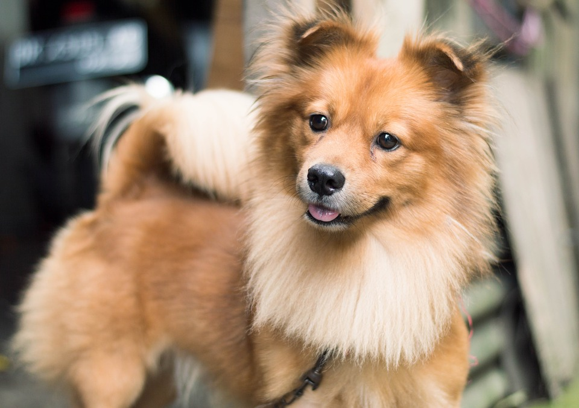

Pagina web del Feicho, Faig, Flavio Ilanes, con pipeline Jenkins... A

By Elaina Zachos PUBLISHED MAY 16, 2018
There are roughly (or, if you prefer, ruffly) a billion dogs on the planet. Although dogs and humans have been existing alongside one another for tens of thousands of years, experts say 85 percent of the world’s dogs are
feral. Roaming streets and villages, these canines aren’t domesticated pets but still hang out around human habitats. When pups are between two and three months old, their mothers will abandon them for any number
of reasons. With no mother to watch out for them, infant mortality of pups under one year skyrockets to around 90 percent. So, only about 10 percent of motherless, homeless pups survive.
Related:
3 Photos of Domesticated Dogs
Without mothers, how are these abandoned pups supposed to survive? Science says that if they’re cute enough, puppies can make it by tricking humans into adopting them. A new study published in the journal Anthrozoös details
these findings, which could provide insight into how dogs evolved alongside humans. (Related: “Cats Domesticated Themselves, Ancient DNA Shows”)
Related:
3 Photos of Domesticated Dogs
Without mothers, how are these abandoned pups supposed to survive? Science says that if they’re cute enough, puppies can make it by tricking humans into adopting them. A new study published in the journal Anthrozoös details
these findings, which could provide insight into how dogs evolved alongside humans. (Related: “Cats Domesticated Themselves, Ancient DNA Shows”)
Related:
3 Photos of Domesticated Dogs
Without mothers, how are these abandoned pups supposed to survive? Science says that if they’re cute enough, puppies can make it by tricking humans into adopting them. A new study published in the journal Anthrozoös details
these findings, which could provide insight into how dogs evolved alongside humans. (Related: “Cats Domesticated Themselves, Ancient DNA Shows”)
Dog-Eat-Dog World
Since newly abandoned pups are competing with each other for human heartstrings, evolution says they should be most adorable around six and 11 weeks. This is around the time they’re weaned and let go of by their mothers.
(Related: “Does Your Dog Prefer You Over Anyone Else? It’s Complicated”) There are a few characteristics that humans find particularly adorable across species: big, forward-facing eyes, floppy and unstable limbs, and a soft, rounded body shape. We’re also keen to squeal when animals
have large heads in comparison to their bodies, and this reaction goes back to evolution.
“What Clive [Wynne] is arguing is, unless you’re cute, you’re going to die,” Herzog says.
Picture-Perfect Pups
For the study, researchers Clive Wynne at Arizona State, Nadine Chersini at Utrecht University, and Nathan Hall at Texas Tech University brought in 51 college students and asked them to rate the attractiveness of headshots
of puppies at different ages. The pups, which ranged from birth to seven months old, spanned three popular dog breeds, including Jack Russell terriers, cane corsos, and white shepherd dogs. (Related: “Prehistoric Puppy
May Be Earliest Evidence of Pet-Human Bonding”)
The participants were asked to judge the puppies’ “attractiveness” rather than “cuteness,” because “we wanted to keep it neutral,” Wynne tells National Geographic. “We didn’t want to nudge people toward infantile features.”
The
researchers thought that people would find pups most attractive between two and three months old. That’s around weaning age, the time when the puppies are abandoned by their mothers and need another caretaker to survive.